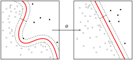

Machine learning
| This is the current revision of this page, as edited by HelpUsStopSpam (talk | contribs) at 00:06, 21 August 2018 (Lots of references for limitations.). The present address (URL) is a permanent link to this version. |
| Machine learning and data mining |
|---|
|  |
{kind=link}
Machine learning is a field of computer science that uses statistical techniques to give computer systems the ability to "learn" (e.g., progressively improve performance on a specific task) with data, without being explicitly programmed.[2]
The name machine learning was coined in 1959 by Arthur Samuel.[1] Evolved from the study of pattern recognition and computational learning theory in artificial intelligence,[3] machine learning explores the study and construction of algorithms that can learn from and make predictions on data[4] – such algorithms overcome following strictly static program instructions by making data-driven predictions or decisions,[5]:2 through building a model from sample inputs. Machine learning is employed in a range of computing tasks where designing and programming explicit algorithms with good performance is difficult or infeasible; example applications include email filtering, detection of network intruders, and computer vision.
Machine learning is closely related to (and often overlaps with) computational statistics, which also focuses on prediction-making through the use of computers. It has strong ties to mathematical optimization, which delivers methods, theory and application domains to the field. Machine learning is sometimes conflated with data mining,[6] where the latter subfield focuses more on exploratory data analysis and is known as unsupervised learning.[7][8]
Within the field of data analytics, machine learning is a method used to devise complex models and algorithms that lend themselves to prediction; in commercial use, this is known as predictive analytics. These analytical models allow researchers, data scientists, engineers, and analysts to "produce reliable, repeatable decisions and results" and uncover "hidden insights" through learning from historical relationships and trends in the data.[9]
Contents
- 1 Overview
- 2 History and relationships to other fields
- 3 Theory
- 4 Approaches
- 4.1 Decision tree learning
- 4.2 Association rule learning
- 4.3 Artificial neural networks
- 4.4 Inductive logic programming
- 4.5 Support vector machines
- 4.6 Clustering
- 4.7 Bayesian networks
- 4.8 Reinforcement learning
- 4.9 Representation learning
- 4.10 Similarity and metric learning
- 4.11 Sparse dictionary learning
- 4.12 Genetic algorithms
- 4.13 Rule-based machine learning
- 5 Applications
- 6 Limitations
- 7 Model assessments
- 8 Ethics
- 9 Software
- 10 Journals
- 11 Conferences
- 12 See also
- 13 References
- 14 Further reading
- 15 External links
Overview[edit]
Tom M. Mitchell provided a widely quoted, more formal definition of the algorithms studied in the machine learning field: "A computer program is said to learn from experience E with respect to some class of tasks T and performance measure P if its performance at tasks in T, as measured by P, improves with experience E."[10] This definition of the tasks in which machine learning is concerned offers a fundamentally operational definition rather than defining the field in cognitive terms. This follows Alan Turing's proposal in his paper "Computing Machinery and Intelligence", in which the question "Can machines think?" is replaced with the question "Can machines do what we (as thinking entities) can do?".[11] In Turing's proposal the various characteristics that could be possessed by a thinking machine and the various implications in constructing one are exposed.
Machine learning tasks[edit]
Machine learning tasks are typically classified into two broad categories, depending on whether there is a learning "signal" or "feedback" available to a learning system:
- Supervised learning:
The computer is presented with example inputs and their desired
outputs, given by a "teacher", and the goal is to learn a general rule
that maps inputs to outputs. As special cases, the input signal can be only partially available, or restricted to special feedback:
- Semi-supervised learning: the computer is given only an incomplete training signal: a training set with some (often many) of the target outputs missing.
- Active learning: the computer can only obtain training labels for a limited set of instances (based on a budget), and also has to optimize its choice of objects to acquire labels for. When used interactively, these can be presented to the user for labeling.
- Reinforcement learning: training data (in form of rewards and punishments) is given only as feedback to the program's actions in a dynamic environment, such as driving a vehicle or playing a game against an opponent.[5]:3
- Unsupervised learning: No labels are given to the learning algorithm, leaving it on its own to find structure in its input. Unsupervised learning can be a goal in itself (discovering hidden patterns in data) or a means towards an end (feature learning).
Machine learning applications[edit]

Another categorization of machine learning tasks arises when one considers the desired output of a machine-learned system:[5]:3
- In classification, inputs are divided into two or more classes, and the learner must produce a model that assigns unseen inputs to one or more (multi-label classification) of these classes. This is typically tackled in a supervised way. Spam filtering is an example of classification, where the inputs are email (or other) messages and the classes are "spam" and "not spam".
- In regression, also a supervised problem, the outputs are continuous rather than discrete.
- In clustering, a set of inputs is to be divided into groups. Unlike in classification, the groups are not known beforehand, making this typically an unsupervised task.
- Density estimation finds the distribution of inputs in some space.
- Dimensionality reduction simplifies inputs by mapping them into a lower-dimensional space. Topic modeling is a related problem, where a program is given a list of human language documents and is tasked to find out which documents cover similar topics.
Among other categories of machine learning problems, learning to learn learns its own inductive bias based on previous experience. Developmental learning, elaborated for robot learning, generates its own sequences (also called curriculum) of learning situations to cumulatively acquire repertoires of novel skills through autonomous self-exploration and social interaction with human teachers and using guidance mechanisms such as active learning, maturation, motor synergies, and imitation.
History and relationships to other fields[edit]
Arthur Samuel, an American pioneer in the field of computer gaming and artificial intelligence, coined the term "Machine Learning" in 1959 while at IBM[12]. As a scientific endeavour, machine learning grew out of the quest for artificial intelligence. Already in the early days of AI as an academic discipline, some researchers were interested in having machines learn from data. They attempted to approach the problem with various symbolic methods, as well as what were then termed "neural networks"; these were mostly perceptrons and other models that were later found to be reinventions of the generalized linear models of statistics.[13] Probabilistic reasoning was also employed, especially in automated medical diagnosis.[14]:488
However, an increasing emphasis on the logical, knowledge-based approach caused a rift between AI and machine learning. Probabilistic systems were plagued by theoretical and practical problems of data acquisition and representation.[14]:488 By 1980, expert systems had come to dominate AI, and statistics was out of favor.[15] Work on symbolic/knowledge-based learning did continue within AI, leading to inductive logic programming, but the more statistical line of research was now outside the field of AI proper, in pattern recognition and information retrieval.[14]:708–710; 755 Neural networks research had been abandoned by AI and computer science around the same time. This line, too, was continued outside the AI/CS field, as "connectionism", by researchers from other disciplines including Hopfield, Rumelhart and Hinton. Their main success came in the mid-1980s with the reinvention of backpropagation.[14]:25
Machine learning, reorganized as a separate field, started to flourish in the 1990s. The field changed its goal from achieving artificial intelligence to tackling solvable problems of a practical nature. It shifted focus away from the symbolic approaches it had inherited from AI, and toward methods and models borrowed from statistics and probability theory.[15] It also benefited from the increasing availability of digitized information, and the ability to distribute it via the Internet.
Machine learning and data mining often employ the same methods and overlap significantly, but while machine learning focuses on prediction, based on known properties learned from the training data, data mining focuses on the discovery of (previously) unknown properties in the data (this is the analysis step of knowledge discovery in databases). Data mining uses many machine learning methods, but with different goals; on the other hand, machine learning also employs data mining methods as "unsupervised learning" or as a preprocessing step to improve learner accuracy. Much of the confusion between these two research communities (which do often have separate conferences and separate journals, ECML PKDD being a major exception) comes from the basic assumptions they work with: in machine learning, performance is usually evaluated with respect to the ability to reproduce known knowledge, while in knowledge discovery and data mining (KDD) the key task is the discovery of previously unknown knowledge. Evaluated with respect to known knowledge, an uninformed (unsupervised) method will easily be outperformed by other supervised methods, while in a typical KDD task, supervised methods cannot be used due to the unavailability of training data.
Machine learning also has intimate ties to optimization: many learning problems are formulated as minimization of some loss function on a training set of examples. Loss functions express the discrepancy between the predictions of the model being trained and the actual problem instances (for example, in classification, one wants to assign a label to instances, and models are trained to correctly predict the pre-assigned labels of a set of examples). The difference between the two fields arises from the goal of generalization: while optimization algorithms can minimize the loss on a training set, machine learning is concerned with minimizing the loss on unseen samples.[16]
Relation to statistics[edit]
Machine learning and statistics are closely related fields. According to Michael I. Jordan, the ideas of machine learning, from methodological principles to theoretical tools, have had a long pre-history in statistics.[17] He also suggested the term data science as a placeholder to call the overall field.[17]
Leo Breiman distinguished two statistical modelling paradigms: data model and algorithmic model,[18] wherein "algorithmic model" means more or less the machine learning algorithms like Random forest.
Some statisticians have adopted methods from machine learning, leading to a combined field that they call statistical learning.[19]
Theory[edit]
A core objective of a learner is to generalize from its experience.[5][20] Generalization in this context is the ability of a learning machine to perform accurately on new, unseen examples/tasks after having experienced a learning data set. The training examples come from some generally unknown probability distribution (considered representative of the space of occurrences) and the learner has to build a general model about this space that enables it to produce sufficiently accurate predictions in new cases.
The computational analysis of machine learning algorithms and their performance is a branch of theoretical computer science known as computational learning theory. Because training sets are finite and the future is uncertain, learning theory usually does not yield guarantees of the performance of algorithms. Instead, probabilistic bounds on the performance are quite common. The bias–variance decomposition is one way to quantify generalization error.
For the best performance in the context of generalization, the complexity of the hypothesis should match the complexity of the function underlying the data. If the hypothesis is less complex than the function, then the model has underfit the data. If the complexity of the model is increased in response, then the training error decreases. But if the hypothesis is too complex, then the model is subject to overfitting and generalization will be poorer.[21]
In addition to performance bounds, computational learning theorists study the time complexity and feasibility of learning. In computational learning theory, a computation is considered feasible if it can be done in polynomial time. There are two kinds of time complexity results. Positive results show that a certain class of functions can be learned in polynomial time. Negative results show that certain classes cannot be learned in polynomial time.
Approaches[edit]
Decision tree learning[edit]
Decision tree learning uses a decision tree as a predictive model, which maps observations about an item to conclusions about the item's target value.
Association rule learning[edit]
Association rule learning is a method for discovering interesting relations between variables in large databases.
Artificial neural networks[edit]
An artificial neural network (ANN) learning algorithm, usually called "neural network" (NN), is a learning algorithm that is vaguely inspired by biological neural networks. Computations are structured in terms of an interconnected group of artificial neurons, processing information using a connectionist approach to computation. Modern neural networks are non-linear statistical data modeling tools. They are usually used to model complex relationships between inputs and outputs, to find patterns in data, or to capture the statistical structure in an unknown joint probability distribution between observed variables.
Deep learning[edit]
Falling hardware prices and the development of GPUs for personal use in the last few years have contributed to the development of the concept of deep learning which consists of multiple hidden layers in an artificial neural network. This approach tries to model the way the human brain processes light and sound into vision and hearing. Some successful applications of deep learning are computer vision and speech recognition.[22]
Inductive logic programming[edit]
Inductive logic programming (ILP) is an approach to rule learning using logic programming as a uniform representation for input examples, background knowledge, and hypotheses. Given an encoding of the known background knowledge and a set of examples represented as a logical database of facts, an ILP system will derive a hypothesized logic program that entails all positive and no negative examples. Inductive programming is a related field that considers any kind of programming languages for representing hypotheses (and not only logic programming), such as functional programs.
Support vector machines[edit]
Support vector machines (SVMs) are a set of related supervised learning methods used for classification and regression. Given a set of training examples, each marked as belonging to one of two categories, an SVM training algorithm builds a model that predicts whether a new example falls into one category or the other.
Clustering[edit]
Cluster analysis is the assignment of a set of observations into subsets (called clusters) so that observations within the same cluster are similar according to some predesignated criterion or criteria, while observations drawn from different clusters are dissimilar. Different clustering techniques make different assumptions on the structure of the data, often defined by some similarity metric and evaluated for example by internal compactness (similarity between members of the same cluster) and separation between different clusters. Other methods are based on estimated density and graph connectivity. Clustering is a method of unsupervised learning, and a common technique for statistical data analysis.
Bayesian networks[edit]
A Bayesian network, belief network or directed acyclic graphical model is a probabilistic graphical model that represents a set of random variables and their conditional independencies via a directed acyclic graph (DAG). For example, a Bayesian network could represent the probabilistic relationships between diseases and symptoms. Given symptoms, the network can be used to compute the probabilities of the presence of various diseases. Efficient algorithms exist that perform inference and learning.
Reinforcement learning[edit]
Reinforcement learning is concerned with how an agent ought to take actions in an environment so as to maximize some notion of long-term reward. Reinforcement learning algorithms attempt to find a policy that maps states of the world to the actions the agent ought to take in those states. Reinforcement learning differs from the supervised learning problem in that correct input/output pairs are never presented, nor sub-optimal actions explicitly corrected.
Representation learning[edit]
Several learning algorithms, mostly unsupervised learning algorithms, aim at discovering better representations of the inputs provided during training. Classical examples include principal components analysis and cluster analysis. Representation learning algorithms often attempt to preserve the information in their input but transform it in a way that makes it useful, often as a pre-processing step before performing classification or predictions, allowing reconstruction of the inputs coming from the unknown data generating distribution, while not being necessarily faithful for configurations that are implausible under that distribution.
Manifold learning algorithms attempt to do so under the constraint that the learned representation is low-dimensional. Sparse coding algorithms attempt to do so under the constraint that the learned representation is sparse (has many zeros). Multilinear subspace learning algorithms aim to learn low-dimensional representations directly from tensor representations for multidimensional data, without reshaping them into (high-dimensional) vectors.[23] Deep learning algorithms discover multiple levels of representation, or a hierarchy of features, with higher-level, more abstract features defined in terms of (or generating) lower-level features. It has been argued that an intelligent machine is one that learns a representation that disentangles the underlying factors of variation that explain the observed data.[24]
Similarity and metric learning[edit]
In this problem, the learning machine is given pairs of examples that are considered similar and pairs of less similar objects. It then needs to learn a similarity function (or a distance metric function) that can predict if new objects are similar. It is sometimes used in Recommendation systems.
Sparse dictionary learning[edit]
In this method, a datum is represented as a linear combination of basis functions, and the coefficients are assumed to be sparse. Let x be a d-dimensional datum, D be a d by n matrix, where each column of D represents a basis function. r is the coefficient to represent x using D. Mathematically, sparse dictionary learning means solving where r is sparse. Generally speaking, n is assumed to be larger than d to allow the freedom for a sparse representation.
Learning a dictionary along with sparse representations is strongly NP-hard and also difficult to solve approximately.[25] A popular heuristic method for sparse dictionary learning is K-SVD.
Sparse dictionary learning has been applied in several contexts. In classification, the problem is to determine which classes a previously unseen datum belongs to. Suppose a dictionary for each class has already been built. Then a new datum is associated with the class such that it's best sparsely represented by the corresponding dictionary. Sparse dictionary learning has also been applied in image de-noising. The key idea is that a clean image patch can be sparsely represented by an image dictionary, but the noise cannot.[26]
Genetic algorithms[edit]
A genetic algorithm (GA) is a search heuristic that mimics the process of natural selection, and uses methods such as mutation and crossover to generate new genotype in the hope of finding good solutions to a given problem. In machine learning, genetic algorithms found some uses in the 1980s and 1990s.[27][28] Conversely, machine learning techniques have been used to improve the performance of genetic and evolutionary algorithms.[29]
Rule-based machine learning[edit]
Rule-based machine learning is a general term for any machine learning method that identifies, learns, or evolves "rules" to store, manipulate or apply, knowledge. The defining characteristic of a rule-based machine learner is the identification and utilization of a set of relational rules that collectively represent the knowledge captured by the system. This is in contrast to other machine learners that commonly identify a singular model that can be universally applied to any instance in order to make a prediction.[30] Rule-based machine learning approaches include learning classifier systems, association rule learning, and artificial immune systems.
Learning classifier systems[edit]
Learning classifier systems (LCS) are a family of rule-based machine learning algorithms that combine a discovery component (e.g. typically a genetic algorithm) with a learning component (performing either supervised learning, reinforcement learning, or unsupervised learning). They seek to identify a set of context-dependent rules that collectively store and apply knowledge in a piecewise manner in order to make predictions.[31]
Applications[edit]
Applications for machine learning include:
This list has no precise inclusion criteria as described in the Manual of Style for standalone lists. (April 2018) |
- Agriculture
- Automated theorem proving[32][33]
- Adaptive websites[citation needed]
- Affective computing
- Bioinformatics
- Brain–machine interfaces
- Cheminformatics
- Classifying DNA sequences
- Computational anatomy
- Computer Networks
- Telecommunication
- Computer vision, including object recognition
- Detecting credit-card fraud
- General game playing[34]
- Information retrieval
- Internet fraud detection[21]
- Linguistics
- Marketing
- Machine learning control
- Machine perception
- Medical diagnosis
- Economics
- Insurance
- Natural language processing
- Natural language understanding[35]
- Optimization and metaheuristic
- Online advertising
- Recommender systems
- Robot locomotion
- Search engines
- Sentiment analysis (or opinion mining)
- Sequence mining
- Software engineering
- Speech and handwriting recognition
- Financial market analysis
- Structural health monitoring
- Syntactic pattern recognition
- Time series forecasting
- User behavior analytics
- Translation[36]
In 2006, the online movie company Netflix held the first "Netflix Prize" competition to find a program to better predict user preferences and improve the accuracy on its existing Cinematch movie recommendation algorithm by at least 10%. A joint team made up of researchers from AT&T Labs-Research in collaboration with the teams Big Chaos and Pragmatic Theory built an ensemble model to win the Grand Prize in 2009 for $1 million.[37] Shortly after the prize was awarded, Netflix realized that viewers' ratings were not the best indicators of their viewing patterns ("everything is a recommendation") and they changed their recommendation engine accordingly.[38]
In 2010 The Wall Street Journal wrote about the firm Rebellion Research and their use of Machine Learning to predict the financial crisis. [39]
In 2012, co-founder of Sun Microsystems Vinod Khosla predicted that 80% of medical doctors jobs would be lost in the next two decades to automated machine learning medical diagnostic software.[40]
In 2014, it has been reported that a machine learning algorithm has been applied in Art History to study fine art paintings, and that it may have revealed previously unrecognized influences between artists.[41]
Limitations[edit]
Although machine learning has been transformative in some fields, effective machine learning is difficult because finding patterns is hard and often not enough training data are available; as a result, many machine-learning programs often fail to deliver the expected value.[42][43][44] Reasons for this are numerous: lack of (suitable) data, lack of access to the data, data bias, privacy problems, badly chosen tasks and algorithms, wrong tools and people, lack of resources, and evaluation problems.[45]
Machine learning approaches in particular can suffer from different data biases. A machine learning system trained on your current customers only may not be able to predict the needs of new customer groups that are not represented in the training data. When trained on man-made data, machine learning is likely to pick up the same constitutional and unconscious biases already present in society.[46] Language models learned from data have been shown to contain human-like biases.[47][48] Machine learning systems used for criminal risk assessment have been found to be biased against black people.[49][50] In 2015, Google photos would often tag black people as gorillas,[51] and in 2018 this still was not well resolved, but Google reportedly was still using the workaround to remove all gorilla from the training data, and thus was not able to recognize real gorillas at all.[52] Similar issues with recognizing non-white people have been found in many other systems.[53] In 2016, Microsoft tested a chatbot that learned from Twitter, and it quickly picked up racist and sexist language.[54] Because of such challenges, the effective use of machine learning may take longer to be adopted in other domains.[55] In 2018, a self-driving car from Uber failed to detect a pedestrian, who got killed in the accident.[56] Attempts to use machine learning in healthcare with the IBM Watson system failed to deliver even after years of time and billions of investment.[57][58]
Model assessments[edit]
Classification machine learning models can be validated by accuracy estimation techniques like the Holdout method, which splits the data in a training and test set (conventionally 2/3 training set and 1/3 test set designation) and evaluates the performance of the training model on the test set. In comparison, the N-fold-cross-validation method randomly splits the data in k subsets where the k-1 instances of the data are used to train the model while the kth instance is used to test the predictive ability of the training model. In addition to the holdout and cross-validation methods, bootstrap, which samples n instances with replacement from the dataset, can be used to assess model accuracy.[59]
In addition to overall accuracy, investigators frequently report sensitivity and specificity meaning True Positive Rate (TPR) and True Negative Rate (TNR) respectively. Similarly, investigators sometimes report the False Positive Rate (FPR) as well as the False Negative Rate (FNR). However, these rates are ratios that fail to reveal their numerators and denominators. The Total Operating Characteristic (TOC) is an effective method to express a model's diagnostic ability. TOC shows the numerators and denominators of the previously mentioned rates, thus TOC provides more information than the commonly used Receiver Operating Characteristic (ROC) and ROC's associated Area Under the Curve (AUC).[60]
Ethics[edit]
Machine learning poses a host of ethical questions. Systems which are trained on datasets collected with biases may exhibit these biases upon use (algorithmic bias), thus digitizing cultural prejudices.[61] For example, using job hiring data from a firm with racist hiring policies may lead to a machine learning system duplicating the bias by scoring job applicants against similarity to previous successful applicants.[62][63] Responsible collection of data and documentation of algorithmic rules used by a system thus is a critical part of machine learning.
Because language contains biases, machines trained on language corpora will necessarily also learn bias.[64]
Other forms of ethical challenges, not related to personal biases, are more seen in health care. There are concerns among health care professionals that these systems might not be designed in the public's interest, but as income generating machines. This is especially true in the United States where there is a perpetual ethical dilemma of improving health care, but also increasing profits. For example, the algorithms could be designed to provide patients with unnecessary tests or medication in which the algorithm's proprietary owners hold stakes in. There is huge potential for machine learning in health care to provide professionals a great tool to diagnose, medicate, and even plan recovery paths for patients, but this will not happen until the personal biases mentioned previously, and these "greed" biases are addressed.[65]
Software[edit]
Software suites containing a variety of machine learning algorithms include the following :
Free and open-source software[edit]
Proprietary software with free and open-source editions[edit]
Proprietary software[edit]
- Amazon Machine Learning
- Angoss KnowledgeSTUDIO
- Ayasdi
- IBM Data Science Experience
- Google Prediction API
- IBM SPSS Modeler
- KXEN Modeler
- LIONsolver
- Mathematica
- MATLAB
- Microsoft Azure Machine Learning
- Neural Designer
- NeuroSolutions
- Oracle Data Mining
- Oracle AI Platform Cloud Service
- RCASE
- SAS Enterprise Miner
- SequenceL
- Splunk
- STATISTICA Data Miner
Journals[edit]
Conferences[edit]
- Conference on Neural Information Processing Systems
- International Conference on Machine Learning
- International Conference on Learning Representations
- Open Data Science Conference (ODSC)
See also[edit]
{kind=link}
- Artificial intelligence
- Automated machine learning
- Automatic reasoning
- Big data
- Computational intelligence
- Computational neuroscience
- Data science
- Deep learning
- Ethics of artificial intelligence
- Existential risk from advanced artificial intelligence
- Explanation-based learning
- Important publications in machine learning
- List of machine learning algorithms
- List of datasets for machine learning research
- Quantum machine learning
- Similarity learning
- Machine-learning applications in bioinformatics
References[edit]
- ^ Jump up to: a b Samuel, Arthur (1959). "Some Studies in Machine Learning Using the Game of Checkers". IBM Journal of Research and Development. 3 (3): 210–229. CiteSeerX 10.1.1.368.2254
 . doi:10.1147/rd.33.0210.
. doi:10.1147/rd.33.0210.
- Jump up ^ The "without being explicitly programmed" definition is often attributed to Arthur Samuel, who coined the term "machine learning" in 1959.[1] But the phrase is not found literally in this publication, and may be a paraphrase that appeared later. Confer "Paraphrasing Arthur Samuel (1959), the question is: How can computers learn to solve problems without being explicitly programmed?" in Koza, John R.; Bennett, Forrest H.; Andre, David; Keane, Martin A. (1996). Automated Design of Both the Topology and Sizing of Analog Electrical Circuits Using Genetic Programming. Artificial Intelligence in Design '96. Springer, Dordrecht. pp. 151–170. doi:10.1007/978-94-009-0279-4_9.
- Jump up ^ http://www.britannica.com/EBchecked/topic/1116194/machine-learning This tertiary source reuses information from other sources but does not name them.
- Jump up ^ Ron Kohavi; Foster Provost (1998). "Glossary of terms". Machine Learning. 30: 271–274.
- ^ Jump up to: a b c d e Bishop, C. M. (2006), Pattern Recognition and Machine Learning, Springer, ISBN 978-0-387-31073-2
- Jump up ^ Mannila, Heikki (1996). Data mining: machine learning, statistics, and databases. Int'l Conf. Scientific and Statistical Database Management. IEEE Computer Society.
- Jump up ^ Machine learning and pattern recognition "can be viewed as two facets of the same field."[5]:vii
- Jump up ^ Friedman, Jerome H. (1998). "Data Mining and Statistics: What's the connection?". Computing Science and Statistics. 29 (1): 3–9.
- Jump up ^ "Machine Learning: What it is and why it matters". www.sas.com. Retrieved 2016-03-29.
- Jump up ^ Mitchell, T. (1997). Machine Learning. McGraw Hill. p. 2. ISBN 978-0-07-042807-2.
- Jump up ^ Harnad, Stevan (2008), "The Annotation Game: On Turing (1950) on Computing, Machinery, and Intelligence", in Epstein, Robert; Peters, Grace, The Turing Test Sourcebook: Philosophical and Methodological Issues in the Quest for the Thinking Computer, Kluwer
- Jump up ^ R. Kohavi and F. Provost, "Glossary of terms," Machine Learning, vol. 30, no. 2–3, pp. 271–274, 1998.
- Jump up ^ Sarle, Warren. "Neural Networks and statistical models". CiteSeerX 10.1.1.27.699 .
- ^ Jump up to: a b c d Russell, Stuart; Norvig, Peter (2003) [1995]. Artificial Intelligence: A Modern Approach (2nd ed.). Prentice Hall. ISBN 978-0137903955.
- ^ Jump up to: a b Langley, Pat (2011). "The changing science of machine learning". Machine Learning. 82 (3): 275–279. doi:10.1007/s10994-011-5242-y.
- Jump up ^ Le Roux, Nicolas; Bengio, Yoshua; Fitzgibbon, Andrew (2012). "Improving First and Second-Order Methods by Modeling Uncertainty". In Sra, Suvrit; Nowozin, Sebastian; Wright, Stephen J. Optimization for Machine Learning. MIT Press. p. 404.
- ^ Jump up to: a b Michael I. Jordan (2014-09-10). "statistics and machine learning". reddit. Retrieved 2014-10-01.
- Jump up ^ Cornell University Library. "Breiman: Statistical Modeling: The Two Cultures (with comments and a rejoinder by the author)". Retrieved 8 August 2015.
- Jump up ^ Gareth James; Daniela Witten; Trevor Hastie; Robert Tibshirani (2013). An Introduction to Statistical Learning. Springer. p. vii.
- Jump up ^ Mohri, Mehryar; Rostamizadeh, Afshin; Talwalkar, Ameet (2012). Foundations of Machine Learning. USA, Massachusetts: MIT Press. ISBN 9780262018258.
- ^ Jump up to: a b Alpaydin, Ethem (2010). Introduction to Machine Learning. London: The MIT Press. ISBN 978-0-262-01243-0. Retrieved 4 February 2017.
- Jump up ^ Honglak Lee, Roger Grosse, Rajesh Ranganath, Andrew Y. Ng. "Convolutional Deep Belief Networks for Scalable Unsupervised Learning of Hierarchical Representations" Proceedings of the 26th Annual International Conference on Machine Learning, 2009.
- Jump up ^ Lu, Haiping; Plataniotis, K.N.; Venetsanopoulos, A.N. (2011). "A Survey of Multilinear Subspace Learning for Tensor Data" (PDF). Pattern Recognition. 44 (7): 1540–1551. doi:10.1016/j.patcog.2011.01.004.
- Jump up ^ Yoshua Bengio (2009). Learning Deep Architectures for AI. Now Publishers Inc. pp. 1–3. ISBN 978-1-60198-294-0.
- Jump up ^ Tillmann, A. M. (2015). "On the Computational Intractability of Exact and Approximate Dictionary Learning". IEEE Signal Processing Letters. 22 (1): 45–49. arXiv:1405.6664 . Bibcode:2015ISPL...22...45T. doi:10.1109/LSP.2014.2345761.
- Jump up ^ Aharon, M, M Elad, and A Bruckstein. 2006. "K-SVD: An Algorithm for Designing Overcomplete Dictionaries for Sparse Representation." Signal Processing, IEEE Transactions on 54 (11): 4311–4322
- Jump up ^ Goldberg, David E.; Holland, John H. (1988). "Genetic algorithms and machine learning". Machine Learning. 3 (2): 95–99. doi:10.1007/bf00113892.
- Jump up ^ Michie, D.; Spiegelhalter, D. J.; Taylor, C. C. (1994). Machine Learning, Neural and Statistical Classification. Ellis Horwood.
- Jump up ^ Zhang, Jun; Zhan, Zhi-hui; Lin, Ying; Chen, Ni; Gong, Yue-jiao; Zhong, Jing-hui; Chung, Henry S.H.; Li, Yun; Shi, Yu-hui (2011). "Evolutionary Computation Meets Machine Learning: A Survey" (PDF). Computational Intelligence Magazine. 6 (4): 68–75. doi:10.1109/mci.2011.942584.
- Jump up ^ Bassel, George W.; Glaab, Enrico; Marquez, Julietta; Holdsworth, Michael J.; Bacardit, Jaume (2011-09-01). "Functional Network Construction in Arabidopsis Using Rule-Based Machine Learning on Large-Scale Data Sets". The Plant Cell. 23 (9): 3101–3116. doi:10.1105/tpc.111.088153. ISSN 1532-298X. PMC 3203449 . PMID 21896882.
- Jump up ^ Urbanowicz, Ryan J.; Moore, Jason H. (2009-09-22). "Learning Classifier Systems: A Complete Introduction, Review, and Roadmap". Journal of Artificial Evolution and Applications. 2009: 1–25. doi:10.1155/2009/736398. ISSN 1687-6229.
- Jump up ^ Bridge, James P., Sean B. Holden, and Lawrence C. Paulson. "Machine learning for first-order theorem proving." Journal of automated reasoning 53.2 (2014): 141–172.
- Jump up ^ Loos, Sarah, et al. "Deep Network Guided Proof Search." arXiv preprint arXiv:1701.06972 (2017).
- Jump up ^ Finnsson, Hilmar, and Yngvi Björnsson. "Simulation-Based Approach to General Game Playing." AAAI. Vol. 8. 2008.
- Jump up ^ Sarikaya, Ruhi, Geoffrey E. Hinton, and Anoop Deoras. "Application of deep belief networks for natural language understanding." IEEE/ACM Transactions on Audio, Speech and Language Processing (TASLP) 22.4 (2014): 778–784.
- Jump up ^ "AI-based translation to soon reach human levels: industry officials". Yonhap news agency. Retrieved 4 Mar 2017.
- Jump up ^ "BelKor Home Page" research.att.com
- Jump up ^ "The Netflix Tech Blog: Netflix Recommendations: Beyond the 5 stars (Part 1)". Retrieved 8 August 2015.
- Jump up ^ Scott Patterson (13 July 2010). "Letting the Machines Decide". The Wall Street Journal. Retrieved 24 June 2018.
- Jump up ^ Vonod Khosla (January 10, 2012). "Do We Need Doctors or Algorithms?". Tech Crunch.
- Jump up ^ When A Machine Learning Algorithm Studied Fine Art Paintings, It Saw Things Art Historians Had Never Noticed, The Physics at ArXiv blog
- Jump up ^ "Why Machine Learning Models Often Fail to Learn: QuickTake Q&A". Bloomberg.com. 2016-11-10. Retrieved 2017-04-10.
- Jump up ^ "The First Wave of Corporate AI Is Doomed to Fail". Harvard Business Review. 2017-04-18. Retrieved 2018-08-20.
- Jump up ^ "Why the A.I. euphoria is doomed to fail". VentureBeat. 2016-09-18. Retrieved 2018-08-20.
- Jump up ^ "9 Reasons why your machine learning project will fail". www.kdnuggets.com. Retrieved 2018-08-20.
- Jump up ^ Garcia, Megan (2016). "Racist in the Machine". World Policy Journal. 33 (4): 111–117. doi:10.1215/07402775-3813015. ISSN 0740-2775.
- Jump up ^ Caliskan, Aylin; Bryson, Joanna J.; Narayanan, Arvind (2017-04-14). "Semantics derived automatically from language corpora contain human-like biases". Science. 356 (6334): 183–186. doi:10.1126/science.aal4230. ISSN 0036-8075. PMID 28408601.
- Jump up ^ Wang, Xinan; Dasgupta, Sanjoy (2016), Lee, D. D.; Sugiyama, M.; Luxburg, U. V.; Guyon, I., eds., "An algorithm for L1 nearest neighbor search via monotonic embedding" (PDF), Advances in Neural Information Processing Systems 29, Curran Associates, Inc., pp. 983–991, retrieved 2018-08-20
- Jump up ^ "Machine Bias". ProPublica. Julia Angwin, Jeff Larson, Lauren Kirchner, Surya Mattu. 2016-05-23. Retrieved 2018-08-20.
- Jump up ^ "Opinion | When an Algorithm Helps Send You to Prison". New York Times. Retrieved 2018-08-20.
- Jump up ^ "Google apologises for racist blunder". BBC News. 2015-07-01. Retrieved 2018-08-20.
- Jump up ^ "Google 'fixed' its racist algorithm by removing gorillas from its image-labeling tech". The Verge. Retrieved 2018-08-20.
- Jump up ^ "Opinion | Artificial Intelligence's White Guy Problem". New York Times. Retrieved 2018-08-20.
- Jump up ^ Metz, Rachel. "Why Microsoft's teen chatbot, Tay, said lots of awful things online". MIT Technology Review. Retrieved 2018-08-20.
- Jump up ^ Simonite, Tom. "Microsoft says its racist chatbot illustrates how AI isn't adaptable enough to help most businesses". MIT Technology Review. Retrieved 2018-08-20.
- Jump up ^ "Why Uber's self-driving car killed a pedestrian". The Economist. Retrieved 2018-08-20.
- Jump up ^ "IBM's Watson recommended 'unsafe and incorrect' cancer treatments - STAT". STAT. 2018-07-25. Retrieved 2018-08-21.
- Jump up ^ Hernandez, Daniela; Greenwald, Ted (2018-08-11). "IBM Has a Watson Dilemma". Wall Street Journal. ISSN 0099-9660. Retrieved 2018-08-21.
- Jump up ^ Kohavi, Ron (1995). "A Study of Cross-Validation and Bootstrap for Accuracy Estimation and Model Selection" (PDF). International Joint Conference on Artificial Intelligence.
- Jump up ^ Pontius, Robert Gilmore; Si, Kangping (2014). "The total operating characteristic to measure diagnostic ability for multiple thresholds". International Journal of Geographical Information Science. 28 (3): 570–583. doi:10.1080/13658816.2013.862623.
- Jump up ^ Bostrom, Nick (2011). "The Ethics of Artificial Intelligence" (PDF). Retrieved 11 April 2016.
- Jump up ^ Edionwe, Tolulope. "The fight against racist algorithms". The Outline. Retrieved 17 November 2017.
- Jump up ^ Jeffries, Adrianne. "Machine learning is racist because the internet is racist". The Outline. Retrieved 17 November 2017.
- Jump up ^ Narayanan, Arvind (August 24, 2016). "Language necessarily contains human biases, and so will machines trained on language corpora". Freedom to Tinker.
- Jump up ^ Char, D. S., Shah, N. H., & Magnus, D. (2018). Implementing Machine Learning in Health Care—Addressing Ethical Challenges.New England Journal of Medicine,378(11), 981-983. doi:10.1056/nejmp1714229
Further reading[edit]
- Nils J. Nilsson, Introduction to Machine Learning.
- Trevor Hastie, Robert Tibshirani and Jerome H. Friedman (2001). The Elements of Statistical Learning, Springer. ISBN 0-387-95284-5.
- Pedro Domingos (September 2015), The Master Algorithm, Basic Books, ISBN 978-0-465-06570-7
- Ian H. Witten and Eibe Frank (2011). Data Mining: Practical machine learning tools and techniques Morgan Kaufmann, 664pp., ISBN 978-0-12-374856-0.
- Ethem Alpaydin (2004). Introduction to Machine Learning, MIT Press, ISBN 978-0-262-01243-0.
- David J. C. MacKay. Information Theory, Inference, and Learning Algorithms Cambridge: Cambridge University Press, 2003. ISBN 0-521-64298-1
- Richard O. Duda, Peter E. Hart, David G. Stork (2001) Pattern classification (2nd edition), Wiley, New York, ISBN 0-471-05669-3.
- Christopher Bishop (1995). Neural Networks for Pattern Recognition, Oxford University Press. ISBN 0-19-853864-2.
- Stuart Russell & Peter Norvig, (2002). Artificial Intelligence – A Modern Approach. Prentice Hall, ISBN 0-136-04259-7.
- Ray Solomonoff, An Inductive Inference Machine, IRE Convention Record, Section on Information Theory, Part 2, pp., 56–62, 1957.
- Ray Solomonoff, An Inductive Inference Machine A privately circulated report from the 1956 Dartmouth Summer Research Conference on AI.
External links[edit]
| Wikimedia Commons has media related to Machine learning. |
- International Machine Learning Society
- Popular online course by Andrew Ng, at Coursera. It uses GNU Octave. The course is a free version of Stanford University's actual course taught by Ng, whose lectures are also available for free.
- mloss is an academic database of open-source machine learning software.
- Machine Learning Crash Course by Google. This is a free course on machine learning through the use of TensorFlow.